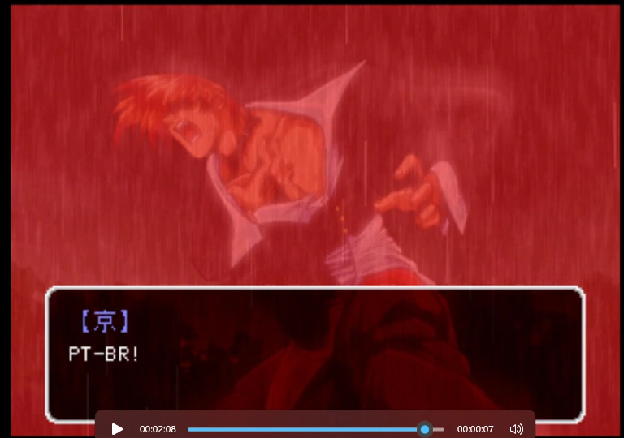
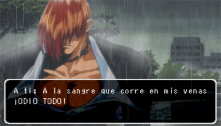
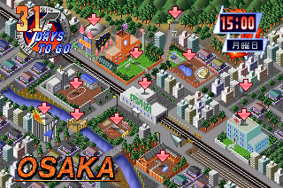
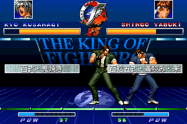
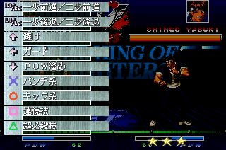

01 / 03 UM RPG ESQUECIDO. UMA HISTÓRIA PARA LER.
THE KING OF FIGHTERS: KYO · PLAYSTATION · 1998
A chama de Kyo
fala português.
Uma tradução independente para PT-BR de The King of Fighters: Kyo, o RPG de PlayStation que ficou restrito ao Japão. Estamos abrindo o caminho, texto por texto, para viver essa história do começo ao fim.
ALÉM DA ARENA
KOF também teve um RPG.
Em The King of Fighters: Kyo, você acompanha Kyo Kusanagi fora dos torneios: circula pela cidade, encontra personagens conhecidos e avança por uma história ligada à saga Orochi. É um outro jeito de entrar no universo de KOF, com conversas e exploração no centro da experiência.
O jogo foi lançado para o PlayStation no Japão, em 1998, e não recebeu lançamento oficial em português. O Projeto Kusanagi nasceu para tornar essa aventura acessível ao público brasileiro.
DENTRO DO JOGO
Kyo além das lutas.
Da exploração à primeira prova técnica: registros do jogo original e das traduções que abriram caminho.

Captura do registro em vídeo do primeiro texto em português rodando em The King of Fighters: Kyo. É uma prova técnica; o patch completo ainda está em desenvolvimento.

Esta captura mostra o trabalho de tradução para o espanhol de Iroquois. Todo o crédito por essa tradução é dele. A imagem não representa o patch PT-BR do Projeto Kusanagi.



POR DENTRO DO PROJETO
Cada linha tem um caminho.
Traduzir o jogo exige primeiro localizar o texto, entender como ele é armazenado e encontrar uma forma segura de reinseri-lo. A investigação técnica e a tradução avançam juntas.
- 01EM ANDAMENTO
Mapear os arquivos
Localizar diálogos, scripts e fontes dentro da estrutura do jogo.
- 02EM ANDAMENTO
Decifrar e preparar o texto
Reconstruir caracteres e espaços para produzir uma base confiável de tradução.
- 03ETAPA SEGUINTE
Traduzir e testar no jogo
Adaptar os diálogos para PT-BR e conferir a leitura na tela do PlayStation.
- 04PLANEJADO
Preparar o patch
Distribuir apenas as alterações e as instruções para aplicá-las a uma cópia compatível do jogo.
Estamos na fase de investigação e preparação dos textos. Ainda não existe uma versão jogável para baixar.
Um jogo preso em outro idioma ainda tem muita história para contar.
PROJETO KUSANAGI — FEITO POR FÃS, PARA FÃS
O QUE VOCÊ PRECISA SABER
Perguntas frequentes.
Já dá para jogar em português?
Ainda não. Já conseguimos exibir texto em português dentro do jogo, mas a tradução e os testes continuam em desenvolvimento.
Quando o patch será lançado?
Não há uma data definida. Vamos anunciar o lançamento quando a tradução e os testes estiverem prontos.
O projeto vai disponibilizar o jogo?
Não. A intenção é distribuir somente um patch com as alterações da tradução. Para usá-lo, será necessária uma cópia compatível do jogo original.
Este é um projeto oficial da SNK?
Não. O Projeto Kusanagi é uma iniciativa independente de fãs e não tem vínculo oficial com a SNK.